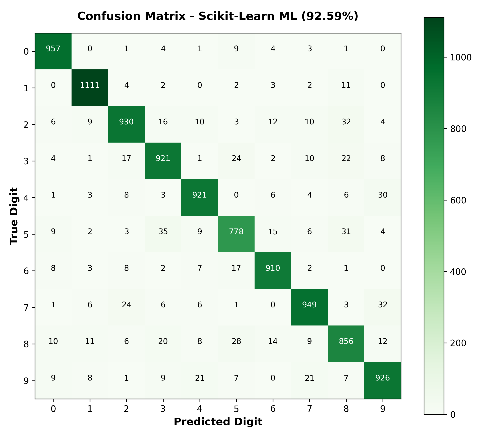

Model 1: Multinomial Logistic Regression
Classical Linear Classification via L-BFGS Convex Optimization
Mathematical Formulation
The model computes a direct linear dot product between all 784 flattened pixels and 10 class weight vectors, followed by a Softmax normalization:
| Component | Dimension | Parameters |
|---|---|---|
| Input Vector ($x$) | 1 × 784 | 0 |
| Weight Matrix ($W$) | 10 × 784 | 7,840 |
| Bias Vector ($b$) | 10 | 10 |
| Total Parameters | 7,850 weights | ~42 KB Payload |
Scikit-Learn Implementation (train_sklearn.py)
from sklearn.linear_model import LogisticRegression
clf = LogisticRegression(
solver="lbfgs",
max_iter=250,
C=1.0,
random_state=42
)
clf.fit(X_train, y_train) # Trains in 6.26 seconds!
Key Insight for Presentation:
Because Logistic Regression has zero hidden layers, its decision boundary is strictly planar. It cannot model complex stroke interactions (e.g. crossing strokes or closed loops), which causes its accuracy to plateau at ~92.6%.
Evaluation Confusion Matrix (10,000 Test Set)

Annotated $10 \times 10$ confusion matrix showing test counts per digit. Notice higher misclassification on visually similar pairs: 5 vs 8 (41 errors) and 4 vs 9 (27 errors).